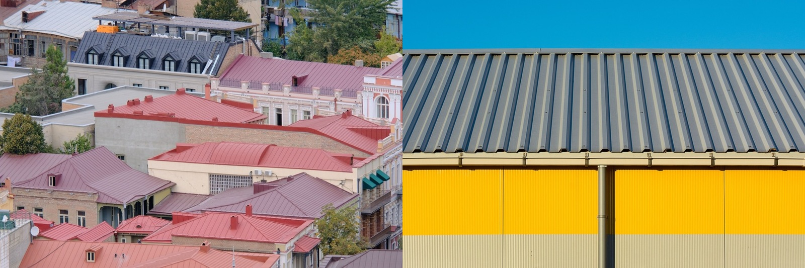

Standing Seam vs Corrugated Metal Roof
Both are metal roofs, but one hides its fasteners and one exposes them. That single detail drives cost, lifespan, and how well each keeps water and wind out.

Both are metal, but they aren't equals. Standing seam hides its fasteners inside raised, interlocking seams, so nothing penetrates the weather surface. Corrugated, and other exposed-fastener panels, screw straight through the face and rely on rubber washers that age. That one difference drives cost, lifespan, and how well each keeps water and wind out.
The upshot
Standing seam is the premium choice: leak- and wind-resistant, longest-lived, best for a permanent home. Corrugated is much cheaper and faster, genuinely good when insulated and coated well, and the smart budget metal roof. Just expect to re-seal exposed screws over time.The comparison
| Factor | Standing seam | Corrugated (exposed fastener) |
|---|---|---|
| Fasteners | 🟢 Hidden in the seams | 🔴 Exposed screws with washers |
| Cost | 🟡 Higher, ~$80–160/m² | 🟢 Cheapest metal, ~$25–60/m² |
| Lifespan | 🟢 40–70 years | 🟡 15–40 years |
| Leak resistance | 🟢 No holes in weather surface | 🟡 Washers age; screws back out |
| Wind / hurricane | 🟢 Best in class | 🟡 Good with correct fastening |
| Install | 🟡 Specialist crew | 🟢 Simple, fast, common |
| Look | 🟢 Sleek, modern | 🟡 Utilitarian |
The core difference
Every exposed fastener is a small hole in your roof sealed by a rubber washer, and washers dry, shrink, and let go over decades, which is why exposed-fastener roofs eventually need re-screwing or re-sealing. Standing seam has no such holes, so it lasts longer and leaks less, at a higher price and needing a skilled installer. Corrugated wins decisively on upfront cost and simplicity.
Which fits your project
- Go standing seam for a permanent home, coastal exposure, or a sleek look, and specify aluminum near salt.
- Go corrugated on a budget or a fast build, with quality coating and insulation, and plan for periodic fastener maintenance.
The tropical reality
Both work here; the choice is budget and horizon. On the coast, standing seam in aluminum is the safest long-term bet against salt and storms. Inland and on a budget, a well-installed corrugated roof with a quality coating and insulation is genuinely good and affordable. Either way, insulate, because bare metal over open purlins is hot and loud.
Building in Panama or Costa Rica?
SORA builds fixed-price homes for foreign buyers in Panama and Costa Rica. We match the method and material to your site, budget, and how long you plan to keep the house, and tell you straight when the cheaper option is the smarter one.
See 2026 build costs →Frequently asked questions
Is standing seam or corrugated metal roofing better?
Standing seam is better for a permanent home. Its hidden fasteners make it more leak- and wind-resistant and it lasts 40 to 70 years. Corrugated (exposed-fastener) metal is much cheaper and faster and is a solid budget choice, but its exposed screws need periodic maintenance and it typically lasts less long.
Why is standing seam more expensive?
It uses more material, precise roll-forming, and a skilled crew to hide the fasteners inside interlocking seams. That labor and engineering buys a longer-lived, more weather-tight roof with no exposed screws to age or leak.
Do exposed-fastener metal roofs leak?
They can over time. Each screw seals against a rubber washer that eventually dries and shrinks, so exposed-fastener roofs may need re-sealing or re-screwing after some years. Standing seam avoids the issue by hiding fasteners entirely.
Sources & verification
Figures in this guide were checked against primary and authoritative sources on 27 July 2026. Immigration, tax, and cost figures change — always confirm the current rules with the official body or a licensed professional before acting.
- Bob Vila — standing seam metal roof
- Metal Roofing Alliance — metal roofing systems